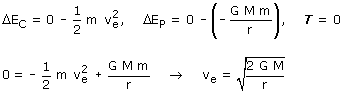

Velocidad de escape La velocidad de escape es la velocidad que debería tener la Tierra para que pudiera llegar hasta el infinito con velocidad 0. Para calcularla se aplica principio de conservación en el recorrido desde la posición normal de la Tierra hasta el infinito:  |